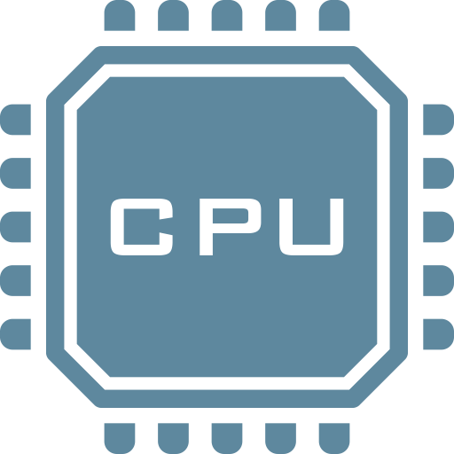
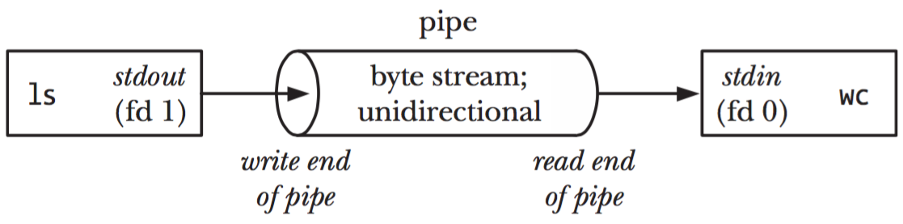

These features have been standardized for Unix systems as the Portable Operating System Interface (POSIX).
Unix Processes
Learn about processes in Unix operating systems: how they are identified, how they report success or failure, how they receive their input and send their output, and how they can be chained together.
On this page
Table of contents
You will need
- A Unix CLI
- An Ubuntu server to connect to
Recommended reading
What is a process?
A process is an instance of a computer program that is being executed.
This is a C program. A program is a passive collection of instructions stored on disk:
#include <stdio.h>
int main()
{
printf("Hello, World!");
return 0;
}
A process is the actual execution of a program that has been loaded into memory:

Every time you run an executable file or an application, a process is created. Simple programs only need one process. More complex applications may launch other child processes for greater performance. For example, most modern browsers will run at least one child process per tab.
Unix processes
Processes work differently depending on the operating system. We will focus on processes in Unix systems, and these features in particular:
| Feature | Description |
|---|---|
| Process ID (PID) | A number uniquely identifying a process at a given time |
| Exit status | A number given when a process exits, indicating whether it was successful |
| Standard streams | Preconnected input and output communication channels between a process and its environment |
| Pipelines | A way to chain processes in sequence by their standard streams, a form of inter-process communication (IPC) |
Note
Later, we will also talk about signals, a way for processes to send each other notifications.
Process ID
Let’s talk about how running processes are identified.
What is a process identifier?
Any process that is created in a Unix system is assigned an identifier (or PID). Each new process gets the next available PID. This ID can be used to reference the process.
PIDs are sometimes reused as processes die and are created again, but at any given time, a PID uniquely identifies a specific process.
By default, the maximum PID on Linux systems is 32,768 on 32-bit systems, and 4,194,304 (~4 million) on 64-bit systems.
Parent processes
The process with PID 0 is the system process, also originally known as the swapper or scheduler. This is the most low-level process managed directly by the kernel.
One of the first thing it does is run the init process, which naturally gets PID 1 (the next available PID). The init process is responsible for initializing the system. Most other processes are either launched by the init process directly, or by one of its children.
All processes retain a reference to the parent process that launched it. The ID of the parent process is commonly called PPID (parent process ID).

The ps command
The ps (process status) command displays currently-running processes:
$> ps
PID TTY TIME CMD
14926 pts/0 00:00:00 bash
14939 pts/0 00:00:00 ps
By default, it only lists your user’s processes that have a controlling terminal
(TTY).
You can obtain more information with the -f (full format) option:
$> ps -f
UID PID PPID C STIME TTY TIME CMD
jde 15237 15158 1 17:48 pts/0 00:00:00 -bash
jde 15251 15237 0 17:48 pts/0 00:00:00 ps -f
We are mostly interested in the Process ID (PID), the parent
Process ID (PPID) and of course the command (CMD) that
is being run. But the others also provide useful
information.
Listing all processes
Of course, there are more than 2 processes running on your computer. Add the
-e (every) option to see all running processes. The list will be much
longer. This is an abbreviated example:
$> ps -ef
UID PID PPID C STIME TTY TIME CMD
root 1 0 0 09:38 ? 00:00:30 /sbin/init
root 2 0 0 09:38 ? 00:00:30 [kthread]
...
root 402 1 0 09:39 ? 00:00:00 /lib/systemd/systemd-journald
syslog 912 1 0 09:39 ? 00:00:00 /usr/sbin/rsyslogd -n
root 1006 1 0 09:39 ? 00:00:00 /usr/sbin/cron -f
...
root 1700 1 0 Sep11 ? 00:00:00 /usr/sbin/sshd -D
jde 3350 1700 0 17:52 ? 00:00:00 sshd: jde@pts/0
jde 3378 3350 0 15:32 pts/0 00:00:00 -bash
jde 3567 3378 0 15:51 pts/0 00:00:00 ps -ef
Note that the command you just ran, ps -ef, is in the process list (at the
bottom in this example). This is because it was running while it was listing the
other processes.
Process tree
On some Linux distributions like Ubuntu, the ps command also accepts a
--forest option which visually shows the relationship between processes and
their parent:
$> ps -ef --forest
UID PID PPID C STIME TTY TIME CMD
...
root 1700 1 0 Sep11 ? 00:00:00 /usr/sbin/sshd -D
jde 3350 1700 0 17:52 ? 00:00:00 \_ sshd: jde@pts/0
jde 3378 3350 0 17:52 pts/0 00:00:00 \_ -bash
jde 3567 3378 0 17:54 pts/0 00:00:00 \_ ps -ef --forest
You can clearly see that:
- Process 1700, the SSH server (the
dinsshdis for daemon), was launched by the init process (PID 1) and is run byroot. - Process 3350 was launched by the SSH server when you connected. It is your SSH
session and manages your terminal device, named
pts/0here. - Process 3378 is a Bash login shell that was launched when you connected (as
configured in
/etc/passwd) and is attached to terminalpts/0. - Process 3567 is the
pscommand you launched from the shell.
Running more processes
Let’s run some other processes and see if we can list them.
Open a new terminal on your local machine and connect to the same server.
If you go back to the first terminal and run the ps command again, you should
see both virtual terminal processes corresponding to your two terminals, as well
as the two bash shells running within them:
$> ps -ef --forest
...
root 1700 1 0 Sep11 ? 00:00:00 /usr/sbin/sshd -D
jde 3350 1700 0 17:52 ? 00:00:00 \_ sshd: jde@pts/0
jde 3378 3350 0 17:52 pts/0 00:00:00 | \_ -bash
jde 3801 3378 0 18:22 pts/0 00:00:00 | \_ ps -ef --forest
jde 3789 1700 0 18:21 ? 00:00:00 \_ sshd: jde@pts/1
jde 3791 3789 0 18:21 pts/1 00:00:00 \_ -bash
Sleeping process
Run a sleep command in the second terminal:
$> sleep 1000
It launches a process that does nothing for 1000 seconds, but keeps running.
It will block your terminal during that time, so go back to the other terminal
and run the following ps command, with an additional -u jde option to filter
only processes belonging to your user:
$> ps -f -u jde --forest
UID PID PPID C STIME TTY TIME CMD
...
jde 3350 1700 0 17:52 ? 00:00:00 sshd: jde@pts/0
jde 3378 3350 0 17:52 pts/0 00:00:00 \_ -bash
jde 3823 3378 0 18:24 pts/0 00:00:00 \_ ps -f -u jde --forest
jde 3789 1700 0 18:21 ? 00:00:00 sshd: jde@pts/1
jde 3791 3789 0 18:21 pts/1 00:00:00 \_ -bash
jde 3812 3791 0 18:23 pts/1 00:00:00 \_ sleep 1000
You can indeed see the running process started with the sleep command. It ends
on its own once its 1000 seconds have passed, or you can stop it with Ctrl+C
in the second terminal.
Other monitoring commands
Here are other ways to inspect processes and have more information on their resource consumption:
- The
htopcommand (a better version of the oldertopcommand, meaning table of processes, named after its creator, Hisham’s top), shows processes along with CPU and memory consumption. It’s an interactive command you can exit withq(quit). - The
freecommand is not directly related to processes, but it helps you know how much memory is remaining on your system.
$> free -m
total used free shared buff/cache available
Mem: 985 90 534 0 359 751
Swap: 0 0 0
The -m option of the free command displays memory size in
mebibytes, a more human-readable quantity, instead of bytes.
Exit status
How children indicate success to their parent.

What is an exit status?
The exit status of a process is a small number (typically from 0 to 255) passed from a child process to its parent process when it has finished executing.
It is meant to allow the child process to indicate how or why it exited.
It’s common practice for the exit status of Unix/Linux programs to be 0 to indicate success, and greater than 0 to indicate an error (it is sometimes also called an error level).
Retrieving the exit status in a shell
In a typical shell like Bash, you can retrieve the exit status of last
executed command from the special variable $?:
$> ls /
...
$> echo $?
0
$> ls file-that-does-not-exist
ls: cannot access 'file-that-does-not-exist': No such file or directory
$> echo $?
2
Retrieving the exit status in code
Exit codes are not a feature that is limited to command line use. When running a program from an application, you can also obtain the exit status.
For example:
- By using the
&$return_varreference when calling PHP’sexecfunction - By calling the
Process#exitValue()method after callingRuntime#exec(String command)in Java - By listening to the
closeevent when calling Node.js’sspawnfunction
Meaning of exit statuses
The meaning of exit statuses is unique to the program you are running. For
example, the manual of the ls command documents the following values:
Exit status:
0 if OK,
1 if minor problems (e.g., cannot access subdirectory),
2 if serious trouble (e.g., cannot access command-line argument).
But this will be different for other programs or applications.
The only thing you can rely on for the majority of programs is that 0 is good, anything else is probably bad.
Standard streams
Standard streams are preconnected input and output communication channels between a process and its environment.

The good old days
In pre-Unix (before 1970) systems, programs had to explicitly connect to input and output devices. This was done differently for each device (e.g. magnetic tape drive, disk drive, printer, etc) and operating system.
Unix streams
Unix introduced abstract devices and the concept of a data stream: an ordered sequence of data bytes which can be read until the end of file (EOF).
A program may also write bytes as desired and need not declare how many there will be or how to group them. The data going through a stream may be text (with any encoding) or binary data.
This was groundbreaking at the time because a program no longer had to know or care what kind of device it is communicating with, as had been the case until then.
stdin, stdout & stderr
Any new Unix process is automatically connected to the following streams by default:
| Stream | Shorthand | Description |
|---|---|---|
| Standard input | stdin |
Stream data (often text) going into a program |
| Standard output | stdout |
Stream where a program writes its output data |
| Standard error | stderr |
Another output stream programs can use to output error messages or diagnostics (separate from standard output, allowing output and errors to be distinguished, solving the semipredicate problem) |
Streams, the keyboard, and the terminal
Another Unix breakthrough was to automatically associate:
- The input stream with your terminal keyboard;
- The output and error streams with your terminal display.
This is done by default unless a program chooses to do otherwise.

For example, when your favorite shell, e.g. Bash, is running, it automatically receives keyboard input, and its output data and errors are automatically displayed in the terminal.
Stream inheritance
A child will automatically inherit the standard streams of its parent process (unless redirected, more on that later).
For example, when you run an ls command, you do not have to specify that the
resulting list of files should be displayed in the terminal. The standard output
of the parent process, in this case your shell (e.g. Bash) is inherited by the
ls process.
Similarly, when you run the ssh command to communicate with another machine,
you do not have to explicitly connect your keyboard input to this new process.
As the SSH client is a child process of the shell, it inherits the same standard
input.
The SSH client inherited the standard streams of your shell: it reads what you type, and writes to your terminal. On the server, the shell and the commands it starts read from and write to the SSH session.
You are connected to a server over SSH. Your shell started the SSH client, and on the server, the SSH session started a shell. The connection is open, waiting for you to type.
You type l. It goes to the standard input of the SSH client, which it inherited from your shell. The client sends it over the connection, and on the server, the session hands it to the standard input of the shell.
You type s: it travels the same way.
You press Enter, which travels too. Once it has arrived, the server’s shell starts ls, which inherits the shell’s standard streams.
ls lists the files of the current directory on the server, and writes them to its standard output. It does not know where that goes.
Its output goes to the SSH session, back over the connection, and out of the standard output of the SSH client: your terminal displays it.
Optional input stream
A process is not obligated to use its input or output streams. For example,
the ls command produces output (or an error) but takes no input (it
has arguments, but that does not come from the input data stream).

Optional output stream
Similarly, a process is not obligated to use its output streams. For example,
when you cat a file, it outputs the content of the file to the standard output
stream, but it does not use the standard error stream:
$> cat data.txt
Hello World
Unless the file does not exist, in which case it will output an error message to the standard error stream, and nothing to the standard output stream.
$> cat unknown-file
cat: unknown-file: No such file or directory
Stream redirection
The standard streams can be redirected.
Redirection means capturing output from a file or command, and sending it as input to another file or command.
Any Unix process has a number of file descriptors. They are an abstract indicator used to access a file or other input/output resource such as a pipe (we’ll talk about these later) or socket.
The first three file descriptors correspond to the standard streams by default:
| File descriptor | Stream |
|---|---|
0 |
Standard input (stdin) |
1 |
Standard output (stdout) |
2 |
Standard error (stderr) |
Redirect standard output stream
The > shell operator redirects an output stream.
For example, the following line runs the ls command, but instead of displaying
the result in the terminal, the standard output stream (file descriptor 1)
is redirected to the file data.txt:
$> ls -a 1> data.txt
$> ls
data.txt directory1 file1
$> cat data.txt
.
..
data.txt
directory1
file1
data.txt is in its own list: the shell creates the file before it starts
ls, so that it can connect the standard output of ls to it.
How to use standard output redirection
You can do the same with any command that produces output:
$> echo Hello 1> data.txt
$> cat data.txt
Hello
Note that the > operator overwrites the file. Use >> instead to append
to the end of the file:
$> echo World 1>> data.txt
$> cat data.txt
Hello
World
If you specify no file descriptor, standard output (1) is redirected by
default:
$> echo Hello > data.txt
$> echo Again >> data.txt
$> cat data.txt
Hello
Again
Redirect standard error stream
Note that error messages are not redirected using the redirect operator (>)
like in the previous example. Errors are still displayed in the terminal and the
file remains empty:
$> ls unknown-file > error.txt
ls: unknown-file: No such file or directory
$> cat error.txt
This is because most commands send errors to the standard error stream (file
descriptor 2) instead of the standard output stream.
If you want to redirect the error message to a file, you must redirect the standard error stream instead:
$> ls unknown-file 2> error.txt
$> cat error.txt
ls: unknown-file: No such file or directory
Both standard output and error streams
Some commands will send data to both output streams (standard output and standard error) in the same run. As we’ve seen, both are displayed in the terminal by default.
For example, the grep command prints the lines of a file that contain a word,
and with the -r (recursive) option, it searches all the files of a
directory. The following command searches the SSH configuration files for the
word PasswordAuthentication. Run as a regular user, it prints the lines it
finds to the standard output stream, and an error to the standard error stream
for each file it is not allowed to read, such as the server’s private SSH keys,
which only root may read:
$> grep -r PasswordAuthentication /etc/ssh
grep: /etc/ssh/ssh_host_ecdsa_key: Permission denied
/etc/ssh/ssh_config:# PasswordAuthentication yes
/etc/ssh/sshd_config:#PasswordAuthentication yes
/etc/ssh/sshd_config:# PasswordAuthentication. Depending on your PAM configuration,
/etc/ssh/sshd_config:# PAM authentication, then enable this but set PasswordAuthentication
grep: /etc/ssh/ssh_host_rsa_key: Permission denied
grep: /etc/ssh/ssh_host_ed25519_key: Permission denied
Here, the lines starting with /etc/ssh/ are the output data, while the lines
starting with grep: are error messages on the standard error stream.
Redirect standard output stream (grep)
This example demonstrates how the standard output and error streams can be redirected separately.
The following version redirects standard output to the file found.txt:
$> grep -r PasswordAuthentication /etc/ssh > found.txt
grep: /etc/ssh/ssh_host_ecdsa_key: Permission denied
grep: /etc/ssh/ssh_host_rsa_key: Permission denied
grep: /etc/ssh/ssh_host_ed25519_key: Permission denied
$> cat found.txt
/etc/ssh/ssh_config:# PasswordAuthentication yes
/etc/ssh/sshd_config:#PasswordAuthentication yes
/etc/ssh/sshd_config:# PasswordAuthentication. Depending on your PAM configuration,
/etc/ssh/sshd_config:# PAM authentication, then enable this but set PasswordAuthentication
As you can see, the lines that were found are no longer displayed since they have been redirected to the file, but the error messages printed on the standard error stream are still displayed.
Redirect standard error stream (grep)
The following version redirects standard error to the file errors.txt:
$> grep -r PasswordAuthentication /etc/ssh 2> errors.txt
/etc/ssh/ssh_config:# PasswordAuthentication yes
/etc/ssh/sshd_config:#PasswordAuthentication yes
/etc/ssh/sshd_config:# PasswordAuthentication. Depending on your PAM configuration,
/etc/ssh/sshd_config:# PAM authentication, then enable this but set PasswordAuthentication
$> cat errors.txt
grep: /etc/ssh/ssh_host_ecdsa_key: Permission denied
grep: /etc/ssh/ssh_host_rsa_key: Permission denied
grep: /etc/ssh/ssh_host_ed25519_key: Permission denied
This time, the lines that were found are displayed in the terminal as with the initial command, but the error messages have been redirected to the file.
Redirect both standard output and error streams (grep)
You can perform both redirections at once in one command:
$> grep -r PasswordAuthentication /etc/ssh 1> found.txt 2> errors.txt
$> cat errors.txt
grep: /etc/ssh/ssh_host_ecdsa_key: Permission denied
grep: /etc/ssh/ssh_host_rsa_key: Permission denied
grep: /etc/ssh/ssh_host_ed25519_key: Permission denied
$> cat found.txt
/etc/ssh/ssh_config:# PasswordAuthentication yes
/etc/ssh/sshd_config:#PasswordAuthentication yes
/etc/ssh/sshd_config:# PasswordAuthentication. Depending on your PAM configuration,
/etc/ssh/sshd_config:# PAM authentication, then enable this but set PasswordAuthentication
Combine standard output and error streams (grep)
In some situations, you might want to redirect all of a command’s output (both the standard output stream and error stream) to the same file.
You can do that with the &> operator:
$> grep -r PasswordAuthentication /etc/ssh &> all.txt
$> cat all.txt
grep: /etc/ssh/ssh_host_ecdsa_key: Permission denied
grep: /etc/ssh/ssh_host_rsa_key: Permission denied
grep: /etc/ssh/ssh_host_ed25519_key: Permission denied
/etc/ssh/ssh_config:# PasswordAuthentication yes
/etc/ssh/sshd_config:#PasswordAuthentication yes
/etc/ssh/sshd_config:# PasswordAuthentication. Depending on your PAM configuration,
/etc/ssh/sshd_config:# PAM authentication, then enable this but set PasswordAuthentication
&> file.txt is equivalent to using both 1> file.txt and 2> file.txt.
The lines are not in the same order as in the terminal. When its standard output
is a file, grep collects the lines it finds and writes them in one go, while
it writes each error as soon as it happens.
Redirect standard input stream
Just as a command’s output can be redirected to a file, its input can be redirected from a file.
Let’s create a file for this example:
$> echo foo > bar.txt
The gzip command reads data from its standard input stream, and with the
--stdout option outputs the result to its standard output stream:
gzip --stdout < bar.txt > bar.txt.gz
The above command combines two redirections to compress the contents of the
bar.txt file and save the result into bar.txt.gz.
Pipelines
The Unix philosophy: the power of a system comes more from the relationships among programs than from the programs themselves.

What is a pipeline?
Remember that all Unix systems standardize the following:
- All processes have a standard input stream.
- All processes have a standard output stream.
- Data streams transport text or binary data.
Therefore, the standard output stream of process A can be connected to the standard input stream of another process B.

Processes can be chained into a pipeline, each process transforming data and passing it to the next process.
Imagine a production chain, where the parts (data) go from one person (process) to the next until the final product is assembled.

A simple pipeline
The | operator (a vertical pipe) is used to connect two processes together.
Let’s use two commands, one that prints text as output and one that reads text
as input:
- The
ls(list) command produces a list of files, one by line with the-1option. - The
wc(word count) command can count words, lines (with the-loption), characters or bytes in its input.
You can pipe them together like this:
$> ls -1 | wc -l
This redirects (pipes) the output of the ls command into the input of the
wc command, which will tell us how many files there are in the listed
directory.

A pipeline is also a way to find what you are looking for in a long output. The
ps -ef command lists every process running on the system, and the grep
command keeps only the lines of its input that contain a word. Together, they
find the processes of the SSH server:
$> ps -ef | grep sshd
root 3824 1 0 11:07 ? 00:00:00 sshd: /usr/sbin/sshd [listener] 0 of 10-100 startups
root 3840 3824 0 11:07 ? 00:00:00 sshd: jde [priv]
jde 3851 3840 0 11:07 ? 00:00:00 sshd: jde@pts/0
jde 3854 3852 0 11:07 pts/0 00:00:00 grep --color=auto sshd
The last line is grep itself. Both commands of a pipeline run at the same
time, so grep was running while ps listed the processes, with sshd in its
command line.
The Unix philosophy
Pipelines are one of the core features of Unix systems.
Because Unix programs can be easily chained together, they tend to be simpler and smaller. Complex tasks can be achieved by chaining many small programs together.
This is, in a few words, the Unix philosophy:
- Write programs that do one thing and do it well
- Write programs to work together
- Write programs to handle text streams, because that is a universal interface
Although many programs handle text streams, others also handle binary streams. For example, the ImageMagick library can process images and the FFmpeg library can process videos.
A more complex pipeline
This command pipeline combines five different commands, processing the text data at each step and passing it along to the next command to arrive at the final result. Each of these commands only knows how to do one job:
$> find . -type f | \
sed 's/.*\///' | \
grep -E ".+\.[^\.]+$" | \
sed 's/.*\.//' | \
sort | \
uniq -c
147 jpg
10925 js
2158 json
15 less
45 map
1515 md
The final result is a list of file extensions and the number of files with that extension.
findis used to recursively list all files in the current directory.sed(stream editor) is used to obtain the files’ basenames.grep -E(global regular expression search and print, with Extended regular expressions) is used to filter out names that do not have an extension.sedis used again to transform basenames into just their extension.sortis used to sort the resulting list alphabetically.uniqis used to group identical adjacent lines and count them.
References
- The Linux Process Journey - PID 0 (swapper) - Shlomi Boutnaru
- The Linux Process Journey - PID 1 (init) - Shlomi Boutnaru
- The Linux Process Journey - PID 2 (kthreadd) - Shlomi Boutnaru
- What is the main purpose of the swapper process in Unix? - superuser
- I/O Redirection (The Linux Documentation Project)
- Here Documents (The Linux Documentation Project)
- Unix/Linux - Shell Input/Output Redirections
Appendix: Discard an output stream
Sometimes you might not be interested in one of the output streams.
For example, you may only want the error messages of the grep command from
the previous examples, to see which
files it could not read, and don’t care about the lines it found. You don’t
want to have to delete a useless file either.
The /dev/null device
The file /dev/null is available on all Unix systems and is a null
device (sometimes also called a black hole). It’s a Unix
device file that you can write anything to, but that will discard
all received data.
It never contains anything:
$> cat /dev/null
Even after you write to it:
$> echo Hello World > /dev/null
$> cat /dev/null
Redirect a stream to the null device
When you don’t care about an output stream, you can simply redirect it to the null device:
$> grep -r PasswordAuthentication /etc/ssh > /dev/null
grep: /etc/ssh/ssh_host_ecdsa_key: Permission denied
grep: /etc/ssh/ssh_host_rsa_key: Permission denied
grep: /etc/ssh/ssh_host_ed25519_key: Permission denied
In this example, the standard output stream is redirected to the null device, and therefore discarded, while the standard error stream is displayed normally.
Other redirections to the null device
You can also redirect the standard error stream to the null device, to see only the lines that were found:
$> grep -r PasswordAuthentication /etc/ssh 2> /dev/null
/etc/ssh/ssh_config:# PasswordAuthentication yes
/etc/ssh/sshd_config:#PasswordAuthentication yes
/etc/ssh/sshd_config:# PasswordAuthentication. Depending on your PAM configuration,
/etc/ssh/sshd_config:# PAM authentication, then enable this but set PasswordAuthentication
Or you can redirect both output streams. In this case, all output and error messages will be discarded:
$> grep -r PasswordAuthentication /etc/ssh &> /dev/null
Note
Please send complaints to /dev/null.
Appendix: Redirect one output stream to another
You can also redirect one output stream into another output stream.
For example, the echo command prints its data to the standard output stream by
default:
$> echo Hello World
Hello World
$> echo Hello World > /dev/null
$> echo Hello World 2> /dev/null
Hello World
The i>&j operator redirects file descriptor i to file descriptor j.
This echo command has its data redirected to the standard error stream:
$> echo Hello World 1>&2
Hello World
$> echo Hello World > /dev/null 1>&2
Hello World
$> echo Hello World 2> /dev/null 1>&2
This can be useful if you’re writing a shell script and want to print error messages to the standard error stream.
Appendix: Here documents
The << operator also performs standard input stream redirection but is a
bit different. It’s called a here document and can be used
to send multiline input to a command or script, preserving line breaks and other
whitespace. For example, you could use it to send a list of names or a set of
commands to be executed to a script.
Typing the following cat command starts a here document delimited by the
string EOF:
$> cat << EOF
> Hello
> World
> EOF
Hello
World
After you type the first line, you won’t get your usual prompt back, only the
> prompt of a line still being typed. The here document remains open and you
can type more text. Typing EOF again and pressing Enter
closes the document.
As you can see, the text you typed is printed by cat, with line breaks
preserved.
Appendix: Welcome to the future
Some of the previously-mentioned commands are older than you, although they are regularly updated. But new command line tools are also being developed today:
- The
procscommand is a modern interactive alternative to thepscommand for listing processes, written in Rust, a modern systems programming language. - The
btmcommand is a modern alternative tohtopandtopwith more features, also written in Rust.